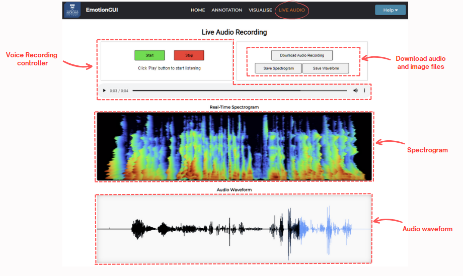

<!DOCTYPE html>
<html>
    <head>
        <title>About Live Audio Recording</title>
    </head>
    <script src="https://kit.fontawesome.com/a076d05399.js" crossorigin="anonymous"></script>
    <link href="aboutStyle.css" rel="stylesheet" type="text/css" />
    </html>
    <body>
    <div class="about_container">
        <h3>Instructions for Live Audio Recording</h3>
        <hr style="height: 2px; background-color:rgb(72, 70, 70);">

        <h4> Welcome to the Live Audio Recording webpage!</h4>
        <p> Here, you can record live audio, review your recordings, and visualise them using waveform and spectrogram displays.<br>
         Additionally, you have the option to download both the audio recordings and the images of these audio features to your local device.<br>
         These recordings can be further utilized in the Visualize and Annotation sections for speech emotion analysis.
        </p>
        <p style="font-weight: bold;">Enjoy recording, reviewing, and visualizing your live audio with ease!</p>
        
      
    </div>
</body>
